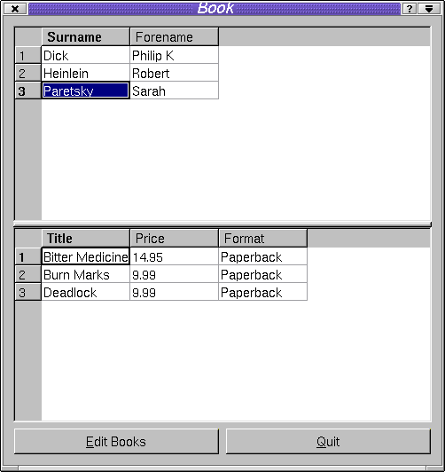
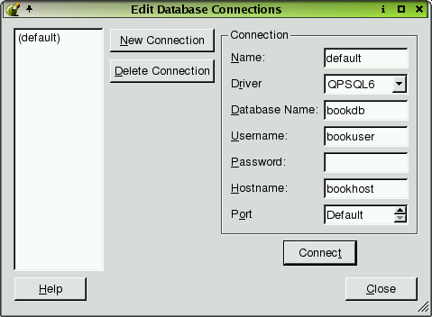
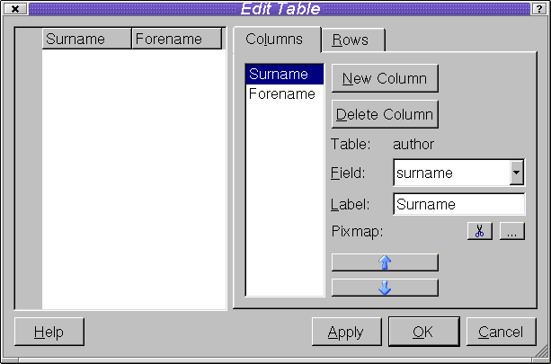
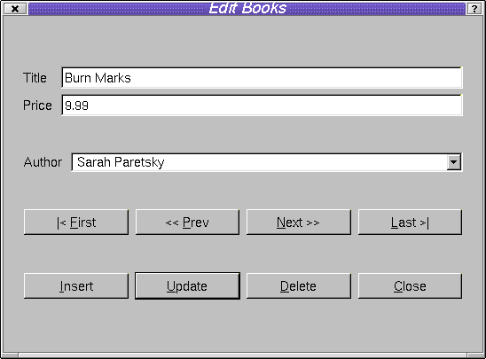

| Home | All Classes | Main Classes | Annotated | Grouped Classes | Functions |
[Prev: Creating Custom Widgets] [Home] [Next: Customizing and Integrating Qt Designer]
This chapter shows you how to use Qt's data-aware widgets from within Qt Designer. It demonstrates INSERT, UPDATE and DELETE in both QDataTables (tables) and QDataBrowsers (forms). It also shows how to code Master-Detail relationships and Drilldown. A simple approach to foreign key handling is presented here; a more sophisticated approach is shown in the online SQL module documentation.
If you wish to run the examples or create your own applications using these widgets you need access to an SQL database and a Qt database driver that can connect to the database. At the time of writing the drivers that Qt supports are QODBC3 (Open Database Connectivity), QOCI8 (Oracle), QPSQL7 (PostgreSQL 6 and 7) and QMYSQL3 (MySQL).
Although you can use the Qt data-aware widgets to browse and edit data in SQL databases without having to write any SQL, a basic understanding of SQL is highly recommended. We assume that you have some familiarity with SELECT, INSERT, UPDATE, and DELETE statements. We also assume a basic understanding of the concepts of normalization and of primary and foreign keys. A standard text covering SQL databases is An Introduction to Database Systems (7th ed.) by C. J. Date, ISBN 0201385902.
In the following text we describe the creation of a 'book' database application. The application demonstrates how to use QDataTables including in-place record editing and how to set up master-detail relationships between QDataTables. It also explains how to drill down from a QDataTable to another widget, for example, to a QDataBrowser or a QDataView and how to perform record editing in a QDataBrowser. A great deal of functionality is available from the classes directly in Qt Designer although subclassing is always available for finer control. If you want to build the 'book' examples you will need to create the example schema on your database.

The Book Application
The Example Schema
Note that the examples in this chapter all use the tables, views and records which are defined in the qt/tools/designer/examples/book/book.sql file. This file has been tested with PostgreSQL 6 and PostgreSQL 7. You may need to modify the SQL in this file to recreate the example database on your own system.
Schema CREATE TABLE Statements
CREATE TABLE author ( id integer primary key, forename varchar(40), surname varchar(40) );CREATE TABLE book ( id integer primary key, title varchar(40), price numeric(10,2), authorid integer, notes varchar(255) );CREATE TABLE sequence ( tablename varchar(10), sequence numeric);The 'book' table is simplified for the purposes of the example. It can only relate a book to a single author (authorid) and lacks an ISBN field. The 'sequence' table is used for generating unique index values for the example tables. Note that SQL databases often provide their own method for creating sequences (for example, using the CREATE SEQUENCE command) which is very likely to be a more optimal solution. For the sake of portability the examples will use a 'sequence' table which will work with the vast majority of SQL databases.
There are two aspects of database connections that we must consider. Firstly the connection we wish to use within Qt Designer itself, and secondly the connection we wish to use in the applications that we create.

Edit Database Connections Dialog
Choose Project|Database Connections from the menu bar. The Edit Database Connections dialog will appear. Click New Connection. For applications that use a single database it will probably be most convenient to use the default connection name of '(default)'. If you use more than one database then each one must be given a unique name. A driver must be chosen from the Driver combo box. The database name may be available in the Database Name combo box or may have to be typed in. The database name, username, password, hostname and port should be provided by your database system administrator. When the Connection information has been completed click Connect. If the connection is made the connection name will appear in the list box on the left hand side of the dialog. You can now close the dialog; the connection settings will remain in effect until you change or delete them or exit from Qt Designer.
Warning: If you are using an existing SQLite database, ensure that the name you specify in the "Database Name" field is not the same as the existing database file. Qt Designer will create a configuration file using the name given for the database and will overwrite any existing files with the same name.
Qt Designer can remember database connection settings in qmake project files. Create a new project, e.g. click File|New, then click the 'C++ Project' icon to invoke the Project Settings dialog. Click the ellipsis button to invoke the Save As dialog; navigate to the project's directory (creating it if necessary). Make sure you're in the project's directory, then enter a project name of 'book.pro'. Click the Save button to return to the Project Settings dialog, then click OK. Next time you start Qt Designer instead of opening individual .ui files open the .pro project file instead and Qt Designer will automatically reload the project's connection settings. To activate the connection click Project|Database Connections. The connections previously saved with the project will be listed in the left hand list box. Click the connection you wish to use and then click Connect. This connection will be used from now on, e.g. for previewing QDataTables. Opening a project file also causes Qt Designer to load in the list of forms associated with the project into the Project Overview window. In most of the explanation that follows we will assume that you use project files and have clicked Connect so that there is always a connection available when you work in Qt Designer.
The applications you create must make their own connections to the SQL database. We provide an example function, createConnections(), that you can use as a basis for your own code.
bool createConnections()
{
// create the default database connection
QSqlDatabase *defaultDB = QSqlDatabase::addDatabase( "QPSQL7" );
if ( ! defaultDB ) {
qWarning( "Failed to connect to driver" );
return FALSE;
}
defaultDB->setDatabaseName( "book" );
defaultDB->setUserName( "bookuser" );
defaultDB->setPassword( "bookpw" );
defaultDB->setHostName( "bookhost" );
if ( ! defaultDB->open() ) {
qWarning( "Failed to open books database: " +
defaultDB->lastError().driverText() );
qWarning( defaultDB->lastError().databaseText() );
return FALSE;
}
return TRUE;
}
We call addDatabase() passing it the name of the driver we wish to use. We then set the connection information by calling the set... functions. Finally we attempt to open the connection. If we succeed we return TRUE, otherwise we output some error information and return FALSE. From qt/tools/designer/examples/book/book1/main.cpp
int main( int argc, char *argv[] )
{
QApplication app( argc, argv );
if ( ! createConnections() )
return 1;
BookForm bookForm;
app.setMainWidget( &bookForm );
bookForm.show();
return app.exec();
}
All the examples presented in this chapter call createConnections() after creating the QApplication object in their main.cpp file and make use of the default connection. If you need to connect to multiple databases use the two-argument form of addDatabase(), passing it both the name of the driver and a unique identifier. This is explained further in the Qt SQL Module documentation.
You do not need to keep a reference to database connections. If you use a single database connection, this becomes the default connection and database functions will use this connection automatically. We can always get a pointer to any of our connections by calling QSqlDatabase::database().
If you create a main.cpp file using Qt Designer, this file will not include createConnections(). We do not include this function because it needs the username and password for the database connection, and you may prefer to handle these differently from our simple example function. As a result, applications that preview correctly in Qt Designer will not run unless you implement your own database connections function.
QDataTables may be placed on any form to provide browsing of database tables and views. QDataTables can also be used to update or delete records in-place, i.e. inside the cells themselves. Inserting records via a QDataTable usually requires connecting to the primeInsert() signal, so that we can generate primary keys for example, or provide default values. If we wish to present records using a form view (perhaps combining data from several tables and views) we might use several QDataBrowsers and QDataViews.
This example, along with all the other examples in this chapter, has the project name 'book' and uses the database created by the book.sql script. As we work through the chapter we will build the 'book' application step by step. Create or copy the qt/tools/designer/examples/book/book1/main.cpp file shown earlier. The project file for this first example is qt/tools/designer/examples/book/book1/book.pro. Start a new project by clicking File|New, then click the 'C++ Project' icon to invoke the Project Settings dialog. Click the ellipsis button to invoke the Save As dialog; navigate to the project's directory (creating it if necessary). Make sure you're in the project's directory, then enter a project name of 'book.pro'. Click the Save button to return to the Project Settings dialog, then click OK. Now click Project|Database Connections. Fill in the connection information appropriate to your database then press Connect. The connection name should now appear in the left hand list box. (If this doesn't happen you'll need to contact your database systems administrator for help.) Close the dialog.
We will now create a new form with a QDataTable that's connected to one of our database tables.
Click File|New. The New File dialog presents us with a number of form templates to choose from. Choose the 'Dialog' form and click OK. Now click File|Save. You will be prompted for a filename, call it book.ui.
To place a QDataTable widget on the form either click Tools|Views|DataTable or click the DataTable toolbar button. Click on the form and the Data Table Wizard will appear.
The Database Connection and Table wizard page is used to set up a connection if one doesn't exist and to choose the table or view for the QDataTable. (See Setting Up Qt Designer's Connections.)
Click the connection you wish to use, listed in the left hand Database Connection list box, e.g. "(default)". The available tables and views will appear in the right hand Table list box. Click the 'author' table and then click the Next button.
The Displayed Fields wizard page provides a means of selecting which fields should be displayed in the QDataTable and in what order. By default all fields except the primary key (if there is one) are in the Displayed Fields list box. The left- and right-pointing blue arrow buttons can be used to move fields between the Displayed Fields and the Available Fields list boxes. The blue up and down pointing arrow buttons are used to select the display order of the displayed fields.
The default settings are the ones we want so simply click Next.
The Table Properties wizard page provides convenient access to some of the database-related properties of the QDataTable.
Make sure the Confirm Deletes checkbox is checked, then click Next.
The SQL wizard page is used to set the QDataTable's Filter and Sort properties. The Filter is an SQL WHERE clause (without the word 'WHERE'). For example, to only list authors whose surnames begin with 'P', we would enter title LIKE 'P%'. We'll leave the filter empty. The Available Fields list box lists all the fields. The Sort By list box lists the fields that the QDataTable is to sort by and the direction of their sorting (ASCending or DESCending). The left and right blue arrows are used to move fields between the two list boxes. The up and down blue arrows move fields up and down within the Sort By list box. The ASC or DESC setting is changed with the 'sort order' toolbar button.
Move the surname and forename fields into the Sort By list box and click Next.
The Finish wizard page gives us the opportunity to go back and change any of our settings. We will be able to change them later through the QDataTable's properties so we can finish with the wizard.
Click Finish.
The table will appear on the form with each column labelled with a default column name. If you wish to change the settings then most of them are available in the property window. The display names, the fields they are based upon, and the order of appearance of the columns can be changed using the Edit Table dialog (explained later) by right clicking the QDataTable and left clicking Edit.
Click on the form and click the Lay Out Vertically toolbar button. Now click Preview|Preview Form; the form will run and the table will automatically display all the records.
To turn the form we've created into an executable application we must add the main.cpp file to the project file and make the project. We should also do some renaming to make things easier to understand.
Click on the form and change its name to 'BookForm' and its caption to 'Book'. Click on the QDataTable and change its name to 'AuthorDataTable'.
Click File|Save All.
Open the project file, e.g. book.pro, in a plain text editor and add the line: SOURCES += main.cpp at the end of the file.
Run qmake to generate the make file, e.g. qmake -o Makefile book.pro, then make and run the book program.
This example shows how easy it is to use QDataTable to show the contents of a database table or view. You can use the application we've just built to update and delete author records. In the examples that follow we will cover insertions, setting up master-detail relationships, drilldown and foreign key lookups.
A Note on Foreign Keys
In most relational databases tables contain fields which are foreign keys into other tables. In our 'book' database example the authorid in the book table is a foreign key into the author table. When we present a form to the end user we do not usually want the foreign key itself to be visible but rather the text associated with it. Thus, we would want the author's name to appear rather than the author id when we show book information. In many databases, this can be achieved by using a view. See your database's documentation for details.
Record insertion into a relational database usually requires the generation of a primary key value which uniquely identifies the record in the table. Also we often want to create default values for some fields to minimize the user's work. We will create a slot to capture the QDataTables primeInsert() signal and populate the QSqlRecord insertion buffer with a unique primary key.
Click Edit|Slots to invoke the Edit Functions dialog. Click New Function, then enter the slot name primeInsertAuthor(QSqlRecord*) into the Function Properties' Function line edit box. Click OK.
Click the Connect Signals/Slots toolbar button, then click the AuthorDataTable, drag to the form and release the mouse. The Edit Connections dialog will now appear. Click the primeInsert() signal and then the primeInsertAuthor() slot to make the connection. Now click OK.
Click the Members tab of the Object Explorer window (click Window|Views|Object Explorer to make the window visible if necessary). Click the primeInsertAuthor() slot and an editor window will appear.
We must change the BookForm::primeInsertAuthor() slot to specify the parameter name and perform the necessary action:
void BookForm::primeInsertAuthor( QSqlRecord * buffer ) { QSqlQuery query; query.exec( "UPDATE sequence SET sequence = sequence + 1 WHERE tablename='author';" ); query.exec( "SELECT sequence FROM sequence WHERE tablename='author';" ); if ( query.next() ) { buffer->setValue( "id", query.value( 0 ) ); } }
A QSqlQuery object is used to increment and retrieve a unique 'sequence' number for the author table. The signal passed us a pointer to the insertion buffer and we then put the value we've retrieved, i.e. the next sequence number, into the buffer's id field. (Again, note that SQL databases often support a native 'sequence' function. The method used here is inappropriate for production systems, and is for example purposes only. See your database's documentation for details on how to generate unique keys in code. In many cases, the database can generate them automatically, or the database may provide a special syntax for dealing with sequences.)
If we rebuild the application it will now support INSERT as well as UPDATE and DELETE. We could easily have added additional code to insert default values, e.g. today's date into a date field, if necessary.
Browsing is supported by clicking records and by using the arrow keys. Once a record is active (highlighted) we can edit the it. Press the Insert key to INSERT a new record; press F2 to UPDATE the current record; press the Del key to DELETE the current record. All these operations take place immediately. Users can be given the opportunity to confirm their edits by setting the QDataTable's confirmEdits property to True. If the confirmEdits property is True then user confirmation will be required for all insertions, updates and deletes. For finer control you can set the confirmInsert, confirmUpdate and confirmDelete properties individually.
QDataTable User Interface Interaction
The default user-interface behavior for QDataTables is as follows:
Users can move to records by clicking the scrollbar and clicking records with the mouse. They can also use the keyboard's navigation keys, e.g. Left Arrow, Right Arrow, Up Arrow, Down Arrow, Page Up, Page Down, Home and End.
INSERT is initiated by right-clicking the record and clicking Insert or by pressing the Ins (Insert) key. The user moves between fields using Tab and Shift+Tab. The INSERT will take place if the user presses Enter or Tabs off the last field. If autoEdit is TRUE the insert will take place if the user navigates to another record. INSERT is cancelled by pressing Esc (Escape). If autoEdit is FALSE navigating to another record also cancels the INSERT. Setting confirmInsert to TRUE will require the user to confirm each INSERT.
UPDATE is initiated by right-clicking the record and clicking Update or by pressing F2. The update will take place if the user presses Enter or Tabs off the last field. If autoEdit is TRUE the update will take place if the user navigates to another record. UPDATE is cancelled by pressing Esc. If autoEdit is FALSE navigating to another record also cancels the UPDATE. Setting confirmUpdate to TRUE will require the user to confirm each UPDATE.
DELETE is achieved by right-clicking the record and clicking Delete or by pressing the Del (Delete) key. Setting confirmDelete to TRUE will require the user to confirm each DELETE.
You can change this default behavior programmatically if required.
Databases often have pairs of tables that are related. For example, an invoice table might list the numbers, dates and customers for invoices, but not the actual invoice items, which an invoice item table might store. In the 'book' application we wish to have a QDataTable that we can use to browse through the authors table and a second QDataTable to show the books they've written.
Open the book project if it isn't already open Qt Designer. We will modify this project to show two QDataTables that relate the author table to the book table.
Click the author QDataTable and then click the Break Layout toolbutton.
Resize the DataTable so that it only occupies the top half of the form.
Now click on the DataTable toolbutton and click on the bottom half of the form. The Table Wizard will appear. (This Wizard is explained in Quickly Viewing a Database Table.)
Click the connection you're using and click the book table. Click the Next button.
Since we do not want them visible, make sure the authorid and id fields are moved to the Available Fields list box by using the arrow buttons. Move the title field to the top of the Displayed Fields, and move the price field above the notes field. Click the Next button.
On the Table Properties page click the Read Only checkbox then click the Next button.
On the SQL page we will leave the Filter (WHERE clause) empty. Move the title field to the Sort By list box and click Next. Now click Finish.
Change this QDataTable's name to "BookDataTable".
Shift+Click the top QDataTable so that both QDataTables are selected and then click the Lay Out Vertically (in Splitter) toolbar button.
Click on the form and click the Lay Out Vertically toolbar button.
Preview the form by clicking Preview|Preview Form. All the authors are displayed in the top QDataTable and all the books are displayed in the bottom QDataTable. However we only want the books of the currently selected author showing in the bottom QDataTable. We will deal with this by filtering the records in the book table according to the author selected in the author table.
Using the Table Editor

Edit Table Dialog
QDataTables are created and set up using the SQL Table Wizard. Like any other Qt Designer widget their properties may be changed in the Properties window. Some of the column and row based properties can also be be changed using the Edit Table dialog. This dialog is invoked by right clicking the QDataTable and left clicking the Edit menu item. The right hand half of the Edit Table dialog is where we choose the fields we wish to display, their order and their labels. The procedure for creating columns is as follows:
Click the New Column button.
Drop down the Field combobox to list the available fields.
Click the field you wish to include at this point.
Optionally edit the Label if the default isn't appropriate.
Optionally click the Pixmap ellipsis (...) button to choose a pixmap to be displayed to the left of the column's label. (The ellipsis button appears when you click in the Value part of the Properties list by a pixmap or iconSet property.)
Repeat the steps listed above for each column you wish to add. Once all the fields have been added you can change their ordering by using the blue up and down arrow buttons. At any point you can press Apply to see how the table will look. Finally click the OK button to save the properties you have set. You can always return to the table editor to change these settings later.
To filter the book table's records we need to capture the author QDataTable's currentChanged() signal and change the BookDataTable's filter accordingly.
Click Edit|Slots. In the Edit Functions dialog click New Function and enter a slot name of newCurrentAuthor(QSqlRecord*). Click OK.
Click Edit|Connections to invoke the View and Edit Connections dialog. Create a new connection, connecting the AuthorDataTable's currentChanged() signal to the form's newCurrentAuthor() slot. Click OK.
Click the Members tab of the Object Explorer window (click Window|Views|Object Explorer to make the window visible if necessary). Click the newCurrentAuthor() slot and an editor window will appear.
We must change the BookForm::newCurrentAuthor() slot to specify the parameter name and perform the necessary action:
void BookForm::newCurrentAuthor( QSqlRecord *author ) { BookDataTable->setFilter( "authorid=" + author->value( "id" ).toString() ); BookDataTable->refresh(); }
All that's required now is to change the BookDataTable's filter and refresh the QDataTable to show the results of the filter.
We can now browse and edit authors and see their books in the BookDataTable. In the next section we explore QDataBrowser, which will allow us to drill down to a dialog through which we can edit books. For now we will add some buttons to the main BookForm which we will use to invoke the book editing dialog.
Click the form, then click the Break Layout toolbar button. Resize the form to make room for some buttons at the bottom.
Add two buttons to the bottom of the form. Change their names and labels to the following:
EditPushButton -- &Edit Books
QuitPushButton -- &Quit
Hold down the Shift key and Click both buttons (i.e. Shift+Click the buttons) and click the Lay Out Horizontally toolbar button. Click the form and click the Lay Out Vertically toolbar button.
We will provide the Quit button with functionality now and work on the rest shortly. Click Edit|Connections, then connect the the Quit button's clicked() signal to the form's accept() slot. Click OK.

The Book Application's Edit Books Dialog
We will now create a new form to allow users to edit book records. Click the New toolbar button, click the Dialog template from the New File dialog and click OK. Change the name of the form to EditBookForm and its caption to 'Edit Books'. Click the Save toolbar button and call the file editbook.ui. Now that we have the form we can add a QDataBrowser to show the book records.
Click the Data Browser toolbar button, then click the form. The Data Browser Wizard will appear.
The Database Connection and Table wizard page is used to set up a connection if one doesn't exist and to choose the table or view for the QDataBrowser. (See Setting Up Qt Designer's Connections.)
Click the connection you wish to use, listed in the Database Connection list box, e.g. "(default)". The available tables and views will appear in the Table list box. Click the book table and then click the Next button.
The Displayed Fields wizard page provides a means of selecting which fields should be displayed in the QDataBrowser and in what order. By default all fields except the primary key (if there is one) are in the right hand Displayed Fields list box. The left and right blue arrow buttons can be used to move fields between the Displayed Fields and the Available Fields list boxes. The blue up and down arrow buttons are used to select the display order of the displayed fields.
We don't want to see the authorid foreign key field on the form, so move it to the Available Fields list box. Also, move the title field to the top of the Displayed Fields list. Click the Next button.
The Navigation and Editing wizard page allows us to choose which navigation and editing buttons should appear on the form.
We will accept the defaults and simply click the Next button.
The SQL wizard page is used to set the QDataBrowser's Filter and Sort properties. The Filter is an SQL WHERE clause (without the word 'WHERE'). For example, to only list books that cost less than 50 (of some currency, e.g. dollars), we would enter price < 50. We will leave the filter empty. The Available Fields list box lists all the fields. The Sort By list box lists the fields that the QDataBrowser is to sort by and the direction of their sorting (ASCending or DESCending). The left and right blue arrows are used to move fields between the two list boxes. The up and down blue arrows move fields up and down within the Sort By list box. The ASC or DESC setting is changed with the sort order button.
Move the title field into the Sort By list box and click Next.
The Layout wizard page is used to specify the initial layout of the form.
Change the Number of Columns to 1, then click Next. Now click Finish.
The QDataBrowser will now appear on the form. Resize the form to make it smaller. Click the QDataBrowser then click the Break Layout toolbar button. Click the buttons then click the Break Layout toolbar button. Add another button called 'PushButtonClose' with the text '&Close' and place it to the right of the Delete button.
Shift+Click the Insert, Update, Delete and Close buttons, then click the Lay Out Horizontally toolbar button. Click the QDataBrowser, then click the Lay Out in a Grid toolbar button. Finally click the form and click the Lay Out Vertically toolbar button. Now click the QDataBrowser and rename it 'BookDataBrowser'.
Qt Designer will generate the necessary code to make the browser operational (including generating the appropriate cursor, sort and filter code).
For finer control over the form, we will be creating our own database cursor. Therefore, set the BookDataBrowser's frameworkCode property to FALSE in the Properties window to prevent Qt Designer from generating redundant code for the cursor.
QDataBrowser User Interface Interaction
The user-interface behavior for QDataBrowsers is created by connecting slots and signals. The slots provided are:
insert(), update() and del() for editing;
first(), next(), prev(), and last() for navigation;
refresh() to refresh the cursor from the database;
readFields() to read data from the cursor's edit buffer and writeFields() to write the form's data to the cursor's edit buffer;
clearValues() to clear the form's values.
If you use Qt Designer's QDataBrowser wizard you will be given the option of creating a default set of buttons for navigation and editing. The behavior of these buttons is set up using the slots described above to provide the following functionality:
INSERT is initiated by pressing the Ins (Insert) key. The user moves between fields using Tab and Shift+Tab. If the user presses the Update button the INSERT will take place and the user will be taken to the record they have just inserted. If the user presses the Insert button (i.e. a second time) the INSERT will take place and a new insertion will be initiated. If autoEdit is TRUE the INSERT will take place if the user navigates to another record. INSERT is cancelled by pressing the Esc key or by pressing the Del (Delete) key. If autoEdit is FALSE then navigating to another record also cancels the INSERT. Setting confirmInsert to TRUE will require the user to confirm each INSERT.
UPDATE is automatically initiated whenever the user navigates to a record. An update will take place if the user presses the Update button. If autoEdit is TRUE the update will take place if the user navigates to another record. UPDATE is cancelled by pressing the Esc key or by pressing the Del button. If autoEdit is FALSE then navigating to another record also cancels the UPDATE. Setting confirmUpdate to TRUE will require the user to confirm each UPDATE.
DELETE is achieved by pressing the Del key. Setting confirmDelete to TRUE will require the user to confirm each DELETE.
We now have a working form for editing book records. We need to start the form when the user clicks our 'Edit Books' button, and to navigate to the record they have selected in the BookDataTable. We also need to provide a means of editing the foreign keys, e.g. authorid.
We need to make a new slot to connect the Edit Books' button's clicked() signal to. Click on the Book form to make it Qt Designer's active form. Invoke the Edit Functions dialog and create a new function called editClicked(). Now click Edit|Connections. Connect the Edit Books button's clicked() signal to the form's editClicked() slot. Clicked() slot. Click OK to leave the dialog.
In the Object Explorer window click Members and then click the editClicked function. We need to change it to the following:
void BookForm::editClicked()
{
EditBookForm *dialog = new EditBookForm( this, "Edit Book Form", TRUE );
QSqlCursor cur( "book" );
dialog->BookDataBrowser->setSqlCursor( &cur );
dialog->BookDataBrowser->setFilter( BookDataTable->filter() );
dialog->BookDataBrowser->setSort(QSqlIndex::fromStringList(
BookDataTable->sort(), &cur ) );
dialog->BookDataBrowser->refresh();
int i = BookDataTable->currentRow();
if ( i == -1 ) i = 0; // Always use the first row
dialog->BookDataBrowser->seek( i );
dialog->exec();
delete dialog;
BookDataTable->refresh();
}
We create our dialog as before. We also create a cursor over the book table and set the dialog's QDataBrowser, BookDataBrowser, to use this new cursor. We set the QDataBrowser's filter and sort to those that applied to the main form's book QDataTable. We refresh the QDataBrowser and seek to the same record the user was viewing on the main form. Then we exec the dialog and delete it when the user has finished with it. Finally we update the BookDataTable in the main form to reflect any changes that were made in the dialog.
Because our code refers to a class declared in editbook.h and to a QDataBrowser we need to add two additional include files. Click on the BookForm, then click on the Members tab of the Object Explorer window. Right click the 'Includes (In Declaration)' item and click New. Type in "editbook.h". Now add a second include, this time, <qdatabrowser.h>.
Now when we navigate through the author and book records in the BookForm we can click the Edit Books button to launch our Edit Books dialog. Although the dialog supports UPDATE, DELETE and navigation over the book table, we cannot edit the foreign keys nor perform inserts. We will deal with insertion in the same way as we did with the QDataTable, then we will handle the foreign key relationship to author.
We will create a slot to receive the Edit Books form's primeInsert() signal so that we can insert a unique primary key.
Click on the Edit Books form, then create a new Slot called primeInsertBook(QSqlRecord*).
Click Edit|Slots, then click the New Function button and type the new function name in the Function Properties Function edit box. Click OK.
Connect the BookDataBrowser's primeInsert() signal to the primeInsertBook() slot.
Click the Connect Signals/Slots toolbar button, then click the BookDataBrowser and drag to the form; release the mouse on the form. Now click the primeInsert() signal and the primeInsertBook slot. Click OK.
In the Object Explorer window click Members and then click the primeInsertBook slot. We need to change it to the following:
void EditBookForm::primeInsertBook( QSqlRecord * buffer ) { QSqlQuery query; query.exec( "UPDATE sequence SET sequence = sequence + 1 WHERE tablename='book';" ); query.exec( "SELECT sequence FROM sequence WHERE tablename='book';" ); if ( query.next() ) { buffer->setValue( "id", query.value( 0 ) ); } }
We will also tidy up the user interface slightly. Click the Update button and set its default property to True. Connect the Close button's clicked() signal to the EditBookForm's accept() slot.
Qt's SQL module provides two approaches to dealing with foreign keys. The most powerful and flexible approach is to subclass widgets and use property maps to relate the widgets to the database. This approach is described in the Qt SQL Module documentation, particularly the StatusPicker example. A simpler approach that can be taken wholly within Qt Designer is presented here.
We will add a new field to the EditBookForm so that authors can be edited along with the title and price. Once we've handled the visual design we'll write the code to make it all work.
First we'll add the new widgets. Click the BookDataBrowser and click the Break Layout toolbar button. Resize the form to make it larger and drag each set of buttons down to make some room below the title and price QLineEdits. Click the Text Label toolbar button and click on the form beneath the Price label. Click the Text Label and change its text to 'Author'. Click the ComboBox toolbar button and click on the form beneath the price QLineEdit. In the Property Window change the ComboBox's name to ComboBoxAuthor and change its sizePolicy hSizeType to Expanding.
Now we'll lay out the dialog. Shift+Click the Author label and the ComboBox then click the Lay Out Horizontally toolbar button. Now click the BookDataBrowser and click the Lay Out in a Grid toolbar button.
We need to write some code so that the ComboBox will be populated with author names and scroll to the current book's author. We also need to ensure that we put the author's id into the book table's authorid field when a book record is inserted or updated. We'll ensure the code is executed at the right time by putting it in slots and connecting signals to our slots.
Create two new slots called beforeUpdateBook(QSqlRecord *buffer) and primeUpdateBook(QSqlRecord *buffer). (Click Edit|Slots, then in the Edit Functions dialog click New Function and enter the first new slot. Click New Function again and enter the second slot then click OK.)
When the user navigates through the dialog, each time they move to a new record, a primeUpdate() signal is emitted. We connect to this so that we can update the ComboBox's display. Just before a record is updated or inserted into the database a beforeUpdate() or beforeInsert() signal is emitted. We connect our beforeUpdateBook() slot to both these signals so that we can ensure that the book's authorid field is correctly populated.
Click the BookDataBrowser and drag the mouse to the form; release the mouse and the Edit Connections dialog will appear. Connect the beforeUpdate() signal to our beforeUpdateBook() slot. Connect the beforeInsert() signal to our beforeUpdateBook() slot. Finally connect the primeUpdate() signal to our primeUpdateBook() slot.
All that remains is to write the underlying code. All the code snippets are taken from qt/tools/designer/examples/book/book7/editbook.ui.
We start with the init() function; this is called after the dialog is constructed and we will use it to populate the ComboBox with author names.
void EditBookForm::init()
{
QSqlQuery query( "SELECT surname FROM author ORDER BY surname;" );
while ( query.next() )
ComboBoxAuthor->insertItem( query.value( 0 ).toString());
}
Here we execute a query to get a list of author names and insert each one into the ComboBox.
We next write the code which will be executed just before a record is updated (or inserted) in the database.
void EditBookForm::beforeUpdateBook( QSqlRecord * buffer ) { QSqlQuery query( "SELECT id FROM author WHERE surname ='" + ComboBoxAuthor->currentText() + "';" ); if ( query.next() ) buffer->setValue( "authorid", query.value( 0 ) ); }
We look up the id of the ComboBox's current author and place it in the update (or insert) buffer's authorid field.
As the user navigates through the records we ensure that the ComboBox reflects the current author.
void EditBookForm::primeUpdateBook( QSqlRecord * buffer ) { // Who is this book's author? QSqlQuery query( "SELECT surname FROM author WHERE id='" + buffer->value( "authorid" ).toString() + "';" ); QString author = ""; if ( query.next() ) author = query.value( 0 ).toString(); // Set the ComboBox to the right author for ( int i = 0; i < ComboBoxAuthor->count(); i++ ) { if ( ComboBoxAuthor->text( i ) == author ) { ComboBoxAuthor->setCurrentItem( i ) ; break; } } }
Firstly we look up the book's author and secondly we iterate through the ComboBox's items until we find the author and set the ComboBox's current item to the matching author.
If the author name has changed or been deleted the query will fail and no author id will be inserted into the buffer causing the INSERT to fail. An alternative is to record the author id's as we populate the ComboBox and store them in a QMap which we can then look up as required. This approach requires changes to the init(), beforeUpdateBook() and primeInsertBook() functions and the addition of a new function, mapAuthor(). The relevant code from qt/tools/designer/examples/book/book8/editbook.ui is shown below.
First we need to create a class variable to map author names to author id's. Click in the Members tab of the Object Explorer, then right click the Class Variables item and click New. Type in 'QMap<QString,int> authorMap;'.
We now record the author id's in the init() function.
void EditBookForm::init()
{
QSqlQuery query( "SELECT surname, id FROM author ORDER BY surname;" );
while ( query.next() ) {
ComboBoxAuthor->insertItem( query.value( 0 ).toString() );
int id = query.value( 1 ).toInt();
mapAuthor( query.value( 0 ).toString(), id, TRUE );
}
}
After inserting each author's name into the ComboBox we populate a QMap with the author's name and id.
Instead of looking up the author's id in the database we look it up in the QMap.
void EditBookForm::beforeUpdateBook( QSqlRecord * buffer ) { int id; mapAuthor( ComboBoxAuthor->currentText(), id, FALSE ); buffer->setValue( "authorid", id ); }
We use a single function for storing author id's and returning them so that we can use a static data structure.
void EditBookForm::mapAuthor( const QString & name, int & id, bool populate ) { if ( populate ) authorMap[ name ] = id; else id = authorMap[ name ]; }
If the populate flag is TRUE, we store the author's name and id in the QMap, otherwise we look up the given author name and set id appropriately.
Before we perform an update we must ensure that the author combobox shows the right author.
void EditBookForm::primeUpdateBook( QSqlRecord * buffer ) { int id = buffer->value( "authorid" ).toInt(); for ( int i = 0; i < ComboBoxAuthor->count(); i++ ) { QString author = ComboBoxAuthor->text( i ); if ( authorMap.contains( author ) && authorMap[author] == id ) { ComboBoxAuthor->setCurrentItem( i ) ; break; } } }
Another approach which is especially useful if the same foreign key lookups are required in different parts of the application is to subclass a cursor and use this for our lookups. This is described in the Qt SQL Module documentation, particulary the section on subclassing QSqlCursor.
The 'book' example demonstrates the basic techniques needed for SQL programming with Qt. Additional information on the Qt SQL classes, especially the QSqlQuery and QSqlCursor classes is provided in the Qt SQL Module documentation.
[Prev: Creating Custom Widgets] [Home] [Next: Customizing and Integrating Qt Designer]
| Copyright © 2007 Trolltech | Trademarks | Qt 3.3.8
|